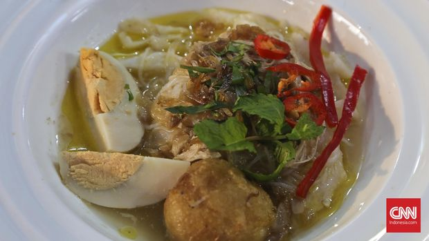

Resep Soto Banjar
Bahan-bahan :
- 500 gram ayam kampung, potong-potong.
- 1 liter air.
- 3 lembar daun jeruk.
- 2 batang serai, memarkan.
- 1 cm jahe, memarkan.
- 1/2 sdt merica bubuk.
- 1 sdt garam.
- 100 gram soun, seduh air panas, tiriskan.
- 2 buah kentang, goreng, iris tipis.
- 2 butir telur rebus, potong-potong.
- 1 batang seledri, iris halus.
- 2 batang daun bawang, iris halus.
- Bawang goreng secukupnya.
- Jeruk nipis untuk penyajian.
Bumbu Halus :
- 5 siung bawang putih.
- 7 butir bawang merah.
- 1 cm kunyit.
- 1 cm jahe.
- 1/2 sdt ketumbar.
- 1/2 sdt merica butiran.
Cara Membuatnya :
- Rebus ayam bersama daun jeruk, serai, jahe, merica, dan garam hingga matang.
- Angkat ayam, suwir-suwir dagingnya, dan sisihkan.
- Panaskan sedikit minyak, tumis bumbu halus hingga harum.
- Masukkan tumisan bumbu ke dalam kaldu ayam, aduk rata dan masak hingga mendidih.
- Tambahkan suwiran ayam, aduk rata.
- Sajikan soto dengan soun, kentang, telur rebus, seledri, daun bawang, bawang goreng, dan jeruk nipis.